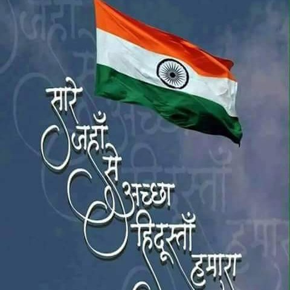

Learn to Play Sare Jahan Se Acha

Here is the video tutorial. Watch it with pateince and enjoy playing Sare Jahan se Acha.
Please Note that all the Swars used in this song are shuddh that is the normal S R G m, only in some lines a Komal g is used. Watch the tutorial for the instructions to play it.Also follow the Notation represenation chart in the Sargam represenation column.
Here are the Sargam Notation of the song for your reference.
If you want to know playing techniques please watch the video tutorial.
Sargam Notations of Sare Jahan se Acha
Saare | jahaan | se | achchha
g g R | S R | .N | S S
hindostaan | hamaara | hamara
.P.D S R G | m G G | R R~(m)G R S
Saare | jahaan | se | achchha
g g R | S R | .N | S S
Ham | bulabulen | hain | isaki,
G m | P PP | Gm | m D P(D)P
ye | gul sitaan | hamaara | hamara
Gm | P m g | R S S | SS .N .D/(.D.N.D) .P/(.P.D.P)
Saare | jahaan | se | achchha
g g R | S R | .N | S S
Parabat | wo | sabase | uncha,
G(R) GG | G(R)| GR m G~ | R~S/(SRS)
hamasaaya | asamaan | ka
.P.D/(.D.N.D) S R | G m G | G
Wo | sntari | hamaara,
G m | P PP | Gm | D P(D)P
wo | paasabaan | hamaara | hamara
Gm | P m g | R S S | .N .D/(.D.N.D) .P/(.P.D.P)
Saare | jahaan | se | achchha
g g R | S R | .N | S S
Hope you were able to understand the notations, and played it well.
Let us meet agin in another lesson, Till then Happy Fluting!!